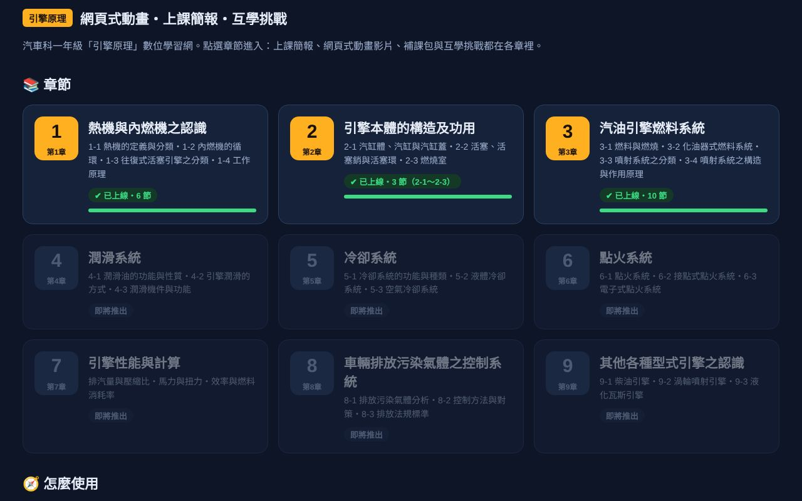
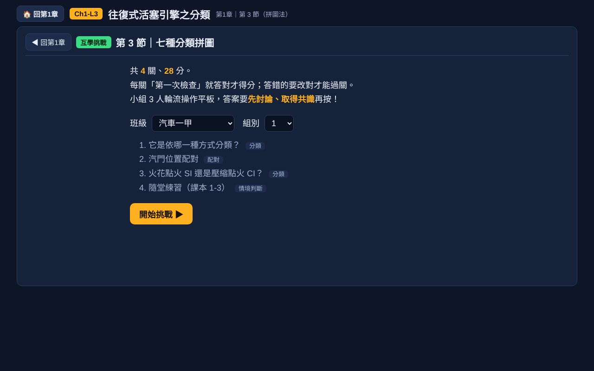
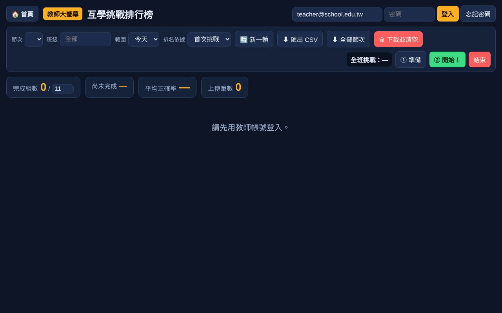

我和 AI 一起，把課本做成 19 節課的網頁式動畫、互學挑戰、上課簡報、學習單與教案。這一頁記錄整個過程：怎麼分工、怎麼把關、踩過哪些坑，以及您可以怎麼開始。

👉 課程網站：ntccar01.github.io/engine-principles（所有成品都可以直接點開試用）
一年級 32 人，學習成就與動機偏低。課本文字多、圖是靜態的，看不出「動起來」的樣子。
沒有引擎實物、沒有剖面教具。只有平板：3 人一台，分成 11 組。
高優計畫要求「科技應用＋四學」（自學、共學、互學、導學），而且要寫成完整教案。
第 1 章 熱機與內燃機（6 節）、第 2 章 引擎本體（3 節）、第 3 章 汽油引擎燃料系統（10 節）。
成本：網站放 GitHub Pages、成績放 Firebase 免費方案、語音用免費合成，除了 AI 訂閱外幾乎零成本。
每一節都照同一套流程做。橘色是老師的工作，藍色是 AI 的工作。
動畫第一版常常「看起來很專業」，卻有物理上不合理的地方。學生會照著畫面記，畫錯就是教錯。下面是我抓出來的幾個例子，點上方按鈕切換。
流動的東西不能穿過實體；轉動方向要合理；比例要和字幕的數字對得上；學生最容易誤解的地方要特別看。
截圖＋指出位置＋說明應該怎樣，再問一句「你理解我的意思嗎？」，AI 會先複述確認再改。
用哪些平台、刪掉什麼（例如後來改用動畫內建挑戰取代 Wordwall）、時間怎麼分，都是老師決定。
| 工具 | 做什麼 | 費用 |
|---|---|---|
| Claude（Cowork） | 讀課本、寫動畫與簡報程式、學習單與教案；連結我的電腦，直接把成品寫進雲端硬碟 | 訂閱 |
| HTML 網頁 | 所有動畫、挑戰、簡報都是單一網頁檔，平板瀏覽器就能開，不用安裝 App | 免費 |
| GitHub Pages | 放網站，學生掃 QR Code 進入 | 免費 |
| Firebase | 學生匿名送出挑戰成績（只記班級、組別），教師大螢幕即時排名、全班同步開始 | 免費方案 |
| 語音合成（edge-tts） | 預錄旁白 MP3；沒有音檔時自動改用瀏覽器語音 | 免費 |
| NotebookLM | 補課影片、語音摘要 | 免費 |
| Google 表單＋Apps Script | 隨堂測驗與單元測驗，用程式一次建好 11 份 | 免費 |
| Padlet、Edcafe、ChatEverywhere、Canva | 拼圖法畫廊、發表牆、補課測驗、查資料、資訊卡 | 依平台 |
| Google 雲端硬碟＋Obsidian | 工作資料夾與開發筆記（每次做完記錄進度與踩坑） | 免費 |

3 人取得共識才按，每關換操作者；答錯要改正才能下一關，只計首次答對。

老師按「準備 → 開始」全班同步；即時排名、各關答對率、匯出 CSV。
課本 PDF 只給 AI 讀，不放上網站；網頁上所有圖都是重新自繪。
成績只記班級＋組別，不記姓名；學生端匿名登入、只能新增不能讀。
瀏覽器朗讀長句會斷掉 → 切成短句，並讓動畫等旁白念完再往下。
瀏覽器快取舊檔 → 簡報連結加版本參數；看網站時按 Ctrl＋F5。
曾發生寫入雲端硬碟沒更新 → 每次寫完讀回比對。
和其他系統共用時，規則要整段加在後面，不能插進別人的區塊；不要另開 Google 登入。
嵌入簡報時互動按鈕跑出畫面 → 動畫自動縮放，跳出小問題時暫時收起面板。
改了簡報就要同步改教案與學習單，每節都核對加總是 50 分鐘。